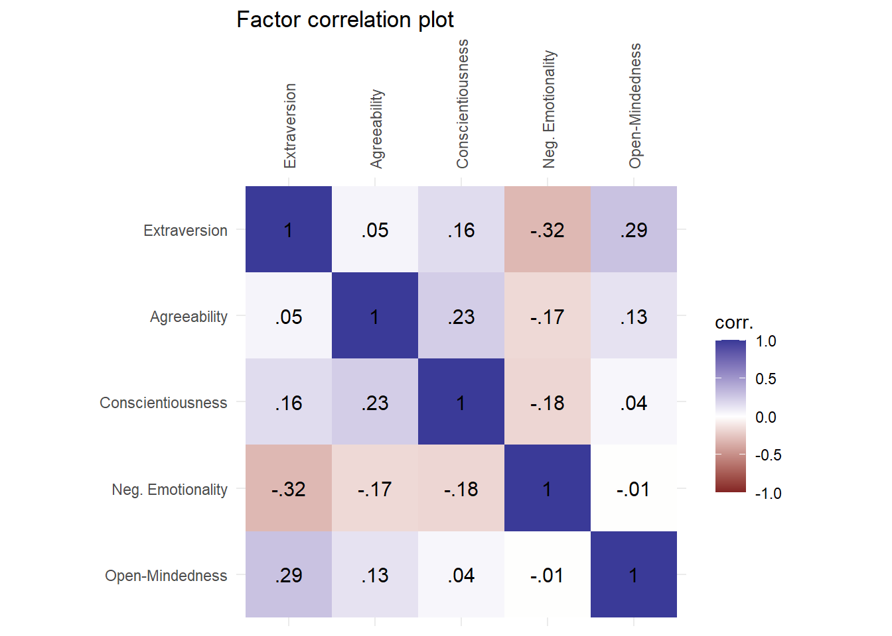
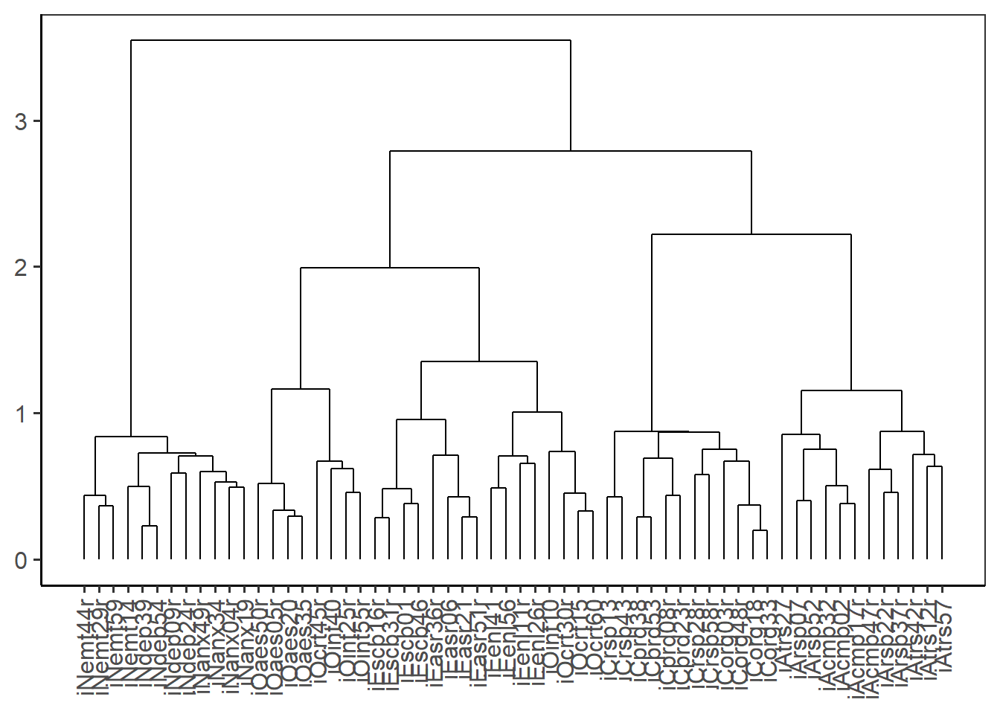
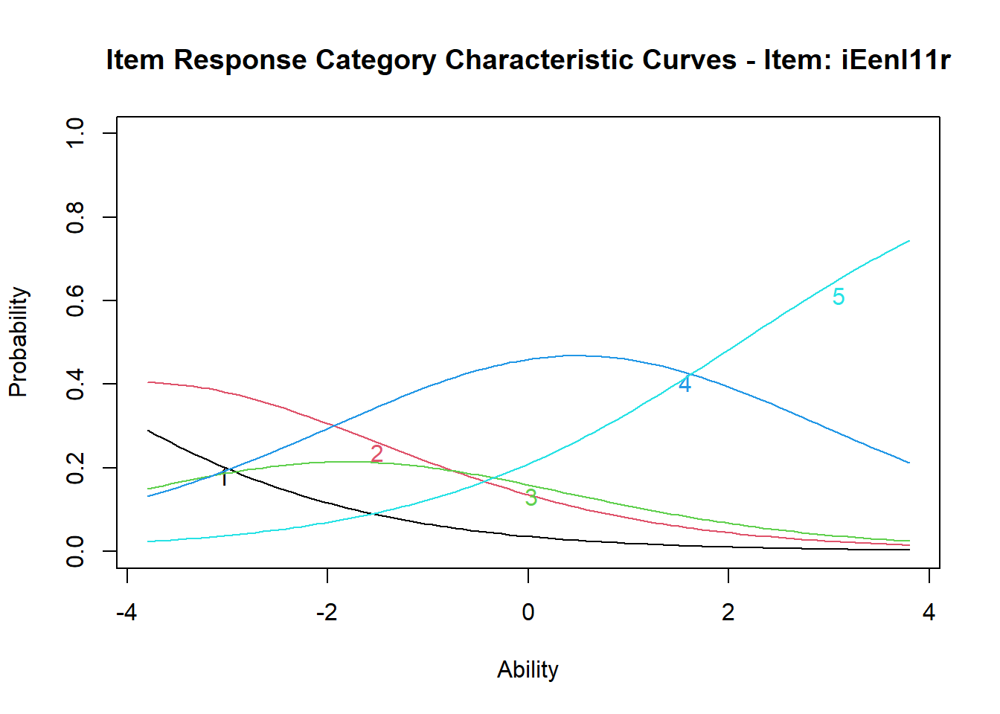
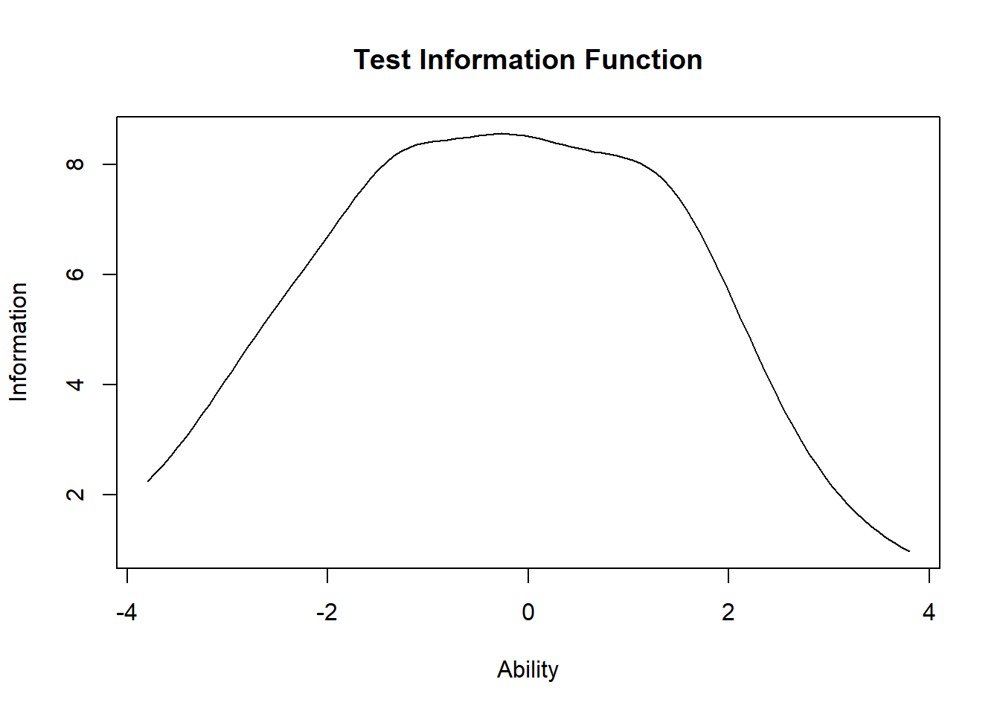

Selected Topics of Psychometrics (NMST570)
Final project
Kateřina Hudáčová
Data
I chose the BFI2 dataset from the ShinyItemAnalysis package. The wording of the items can be found in the attachment of the study (Hřebíčková et al., 2020). The dataset includes answers from \(1733\) respondents to \(63\) items – of those, \(60\) items are a part of the inventory, and \(3\) items are demographic. The \(60\) inventory items are scored on a 5-point Likert scale (ordinal) and the \(3\) demographic items are: age (numeric), gender (nominal/dichotomous), education (nominal). I used alternative item names provided in the dataset documentation and I set both the Gender and Educ variables to factors with appropriate labels. I also created separate data frames for the 5 domains (Extraversion, Agreeability, Conscientiousness, Negative Emotionality, Open-Mindedness).
I provided descriptive statistics for all available grouping variables. Circa \(57.9 \%\) of the respondents are female, \(42.1 \%\) are male. Notably, the dataset only covers an age group of people between \(15\) and \(26\) with a mean of \(20.06\) years. Out of the \(723\) respondents who specified their highest level of attained education – \(32.1 \%\) finished a secondary technical school, \(27.9 \%\) finished a secondary general school, \(13.4 \%\) finished another secondary school, \(11.2 \%\) obtained a Masters degree, \(10.4 \%\) obtained a Bachelor degree, \(4 \%\) finished a tertiary professional school and finally, \(1 \%\) obtained a PhD.
Although the BFI2 measures multiple traits that are commonly assumed to be largely independent, there is some evidence for a single general factor of personality (Musek, 2007), which is why I provided descriptive statistics and a histogram of the total score. The mean total score spans from \(111\) to \(258\) with a mean of \(200.8\) and with a median of \(201\). I also provided total scores and histograms for the 5 respective domains. When observing the distribution of scores grouped by the Big5 domains it can be stated that they do not follow a normal distribution – they are multimodal. Open-Mindedness has the highest mean in this sample (\(43.48\)) followed by Agreeability (\(43.31\)), Extraversion (\(39.59\)), Conscientiousness (\(38.75\)) and Negative Emotionality (35.63). Negative Emotionality exhibits the highest standard deviation, which points to relatively spread out responses on the corresponding items. It could be hypothesized, that these results are, to a certain extent, typical of the given age group (e.g. high Open-Mindedness). On average, female respondents in this sample scored higher than males in all dimensions except Extraversion. The most distinct gender differences in this sample seem to emerge along the dimensions of Negative Emotionaliy (\(\bar X_{(F)} = 37.61\), \(\bar X_{(M)} = 32.92\)) and Agreeability (\(\bar X_{(F)} = 44.3\), \(\bar X_{(M)} = 41.95\)).
| Variable | Mean | Sd | Variable | Mean | Sd |
|---|---|---|---|---|---|
| iEscb01 | 3.62 | 1.05 | iEscb31r | 2.71 | 1.27 |
| iAcmp02 | 4.1 | 0.83 | iAcmp32 | 3.94 | 0.8 |
| iCorg03r | 3.05 | 1.13 | iCorg33 | 3.2 | 1.16 |
| iNanx04r | 3.06 | 1.14 | iNanx34 | 3.55 | 1.1 |
| iOaes05r | 3.21 | 1.3 | iOaes35 | 3.73 | 1.06 |
| iEasr06 | 3.59 | 1.05 | iEasr36r | 3.2 | 1.04 |
| iArsp07 | 4.05 | 0.81 | iArsp37r | 3.16 | 1.16 |
| iCprd08r | 2.34 | 1.13 | iCprd38 | 3.58 | 0.96 |
| iNdep09r | 2.68 | 1.12 | iNdep39 | 2.8 | 1.21 |
| iOint10 | 3.94 | 0.96 | iOint40 | 4 | 0.91 |
| iEenl11r | 3.64 | 1.11 | iEenl41 | 3.42 | 1.03 |
| iAtrs12r | 3 | 1.11 | iAtrs42r | 2.83 | 1.01 |
| iCrsp13 | 3.63 | 0.95 | iCrsp43 | 3.87 | 0.86 |
| iNemt14 | 3.02 | 1.25 | iNemt44r | 2.68 | 1.1 |
| iOcrt15 | 3.55 | 0.97 | iOcrt45r | 3.91 | 0.99 |
| iEscb16r | 2.94 | 1.31 | iEscb46 | 3.53 | 1.14 |
| iAcmp17r | 4.02 | 0.97 | iAcmp47r | 3.29 | 1.31 |
| iCorg18 | 3.32 | 1.15 | iCorg48r | 3.34 | 1.21 |
| iNanx19 | 3.07 | 1.07 | iNanx49r | 3.29 | 1.12 |
| iOaes20 | 3.4 | 1.23 | iOaes50r | 3.65 | 1.24 |
| iEasr21 | 2.95 | 1.19 | iEasr51r | 2.97 | 1.15 |
| iArsp22r | 3.99 | 0.99 | iArsp52 | 4.2 | 0.75 |
| iCprd23r | 2.75 | 1.17 | iCprd53 | 3.53 | 1.01 |
| iNdep24r | 2.89 | 1.13 | iNdep54 | 2.75 | 1.23 |
| iOint25r | 3.56 | 1.21 | iOint55r | 3.52 | 1.07 |
| iEenl26r | 3.45 | 0.92 | iEenl56 | 3.57 | 0.95 |
| iAtrs27 | 3.81 | 1.06 | iAtrs57 | 2.93 | 1.03 |
| iCrsp28r | 3.2 | 1.01 | iCrsp58r | 2.94 | 1.11 |
| iNemt29r | 2.97 | 1.18 | iNemt59 | 2.88 | 1.17 |
| iOcrt30r | 3.56 | 1.12 | iOcrt60 | 3.45 | 0.97 |
| Variable | N | Mean | Std. Dev. | Min | Pctl. 25 | Pctl. 75 | Max |
|---|---|---|---|---|---|---|---|
| Age | 1733 | 20.06 | 2.53 | 15 | 18 | 22 | 26 |
| Total Score | 1733 | 200.77 | 18.5 | 111 | 189 | 213 | 258 |
| Variable | N | Percent |
|---|---|---|
| Gender | 1733 | |
| … Female | 1003 | 57.9% |
| … Male | 730 | 42.1% |
| Education | 723 | |
| … Secondary technical school | 232 | 32.1% |
| … Secondary general school | 202 | 27.9% |
| … Other secondary school | 97 | 13.4% |
| … Tertiary professional school | 29 | 4% |
| … Bachelor degree | 75 | 10.4% |
| … Masters degree | 81 | 11.2% |
| … PhD | 7 | 1% |
Total scores histogram
| Extraversion | Agreeability | Conscientiousness | Neg. Emotionality | Open-Mindedness | |
|---|---|---|---|---|---|
| Mean | 39.59 | 43.31 | 38.75 | 35.63 | 43.48 |
| SD | 8.3 | 6.79 | 8.34 | 9.26 | 7.73 |
| Median | 40 | 44 | 39 | 36 | 44 |
| Min | 17 | 19 | 12 | 12 | 19 |
| Max | 59 | 60 | 60 | 60 | 60 |
Domain scores histograms
##
## Descriptive statistics by group
## : Agreeability
## : Female
## vars n mean sd median trimmed mad min max range skew kurtosis se
## X1 1 1003 44.3 6.37 45 44.54 5.93 20 60 40 -0.42 0.22 0.2
## --------------------------------------------------------------------------------------------------------------------------------------------------
## : Conscientiousness
## : Female
## vars n mean sd median trimmed mad min max range skew kurtosis se
## X1 1 1003 39.23 8.48 40 39.38 8.9 12 60 48 -0.17 -0.45 0.27
## --------------------------------------------------------------------------------------------------------------------------------------------------
## : Extraversion
## : Female
## vars n mean sd median trimmed mad min max range skew kurtosis se
## X1 1 1003 39.51 8.18 40 39.53 8.9 18 59 41 -0.03 -0.55 0.26
## --------------------------------------------------------------------------------------------------------------------------------------------------
## : Neg. Emotionality
## : Female
## vars n mean sd median trimmed mad min max range skew kurtosis se
## X1 1 1003 37.61 8.76 37 37.56 10.38 13 59 46 0.03 -0.54 0.28
## --------------------------------------------------------------------------------------------------------------------------------------------------
## : Open-Mindedness
## : Female
## vars n mean sd median trimmed mad min max range skew kurtosis se
## X1 1 1003 43.81 7.59 44 43.95 7.41 22 60 38 -0.18 -0.36 0.24
## --------------------------------------------------------------------------------------------------------------------------------------------------
## : Agreeability
## : Male
## vars n mean sd median trimmed mad min max range skew kurtosis se
## X1 1 730 41.95 7.11 42 42.1 7.41 19 60 41 -0.23 -0.08 0.26
## --------------------------------------------------------------------------------------------------------------------------------------------------
## : Conscientiousness
## : Male
## vars n mean sd median trimmed mad min max range skew kurtosis se
## X1 1 730 38.09 8.11 38 38.12 7.41 12 60 48 -0.02 -0.2 0.3
## --------------------------------------------------------------------------------------------------------------------------------------------------
## : Extraversion
## : Male
## vars n mean sd median trimmed mad min max range skew kurtosis se
## X1 1 730 39.71 8.47 40 39.83 8.9 17 59 42 -0.13 -0.54 0.31
## --------------------------------------------------------------------------------------------------------------------------------------------------
## : Neg. Emotionality
## : Male
## vars n mean sd median trimmed mad min max range skew kurtosis se
## X1 1 730 32.92 9.24 32 32.74 8.9 12 60 48 0.24 -0.16 0.34
## --------------------------------------------------------------------------------------------------------------------------------------------------
## : Open-Mindedness
## : Male
## vars n mean sd median trimmed mad min max range skew kurtosis se
## X1 1 730 43.04 7.9 43 43.08 8.9 19 60 41 -0.07 -0.46 0.29Density of domain scores by gender
Test validity
The BFI2 is one of several personality inventories that aim to assess individuals on five hypothesized dimensions of personality: Extraversion, Agreeability, Conscientiousness, Negative Emotionality and Open-Mindedness. Definitions of Extraversion differ, but they usually revolve around sociability, assertiveness, proneness to experience positive emotions etc. Agreeability manifests in individuals for example as empathy and positive views of others (Corr & Matthews, 2020). An individual with high scores of Consceintiousness would be orderly, focused on rules and structure. Negative Emotionality is associated with characteristics related to dealing with negative emotions such as stress, anger, anxiety etc. Open-Mindedness is represented by characteristics such as unconventional behavior and openness to new experience (Hřebíčková et al., 2020). The intended use for these specific scores was an “estimation of basic psychometric properties of the Czech adaptation of the Big Five Inventory 2 (BFI-2)” (Hřebíčková et al., 2020). In general, Big Five scores could be used in a multitude of ways: by individuals as a means to self-discovery, by recruiters to select a candidate with suitable personality traits, by researchers to examine the psychological characteristics of groups and so on.The Neuroticism/Negative Emotionality scale is particularly beneficial in clinical psychology. Big Five inventories can also be utilized in career counseling (identifying personal strengths) or in candidate assessment (comparing candidate’s profile to an ideal one). Apart from the broad 5 personality dimensions, Big Five inventories generally also contain more specific subscales (e.g. Sociability) which allow for more precise predictions of behavior.
Since the BFI2 is a self-report inventory, evidence of construct validity could be obtained by examining rater-concordance between the respondents and their significant others, or between respondents and experts (psychiatrists, clinical psychologists). Test content validity could be determined by experts’ ratings of the importance/suitability of the individual items.
Evidence for the convergent validity of the Big Five could be obtained by correlating the domain scores with other psychological tests aiming to measure the same or at least similar constructs. One could for example compare the BFI2 results to reults of the NEO PI-R. Furthermore, one could for example expect the subscale of Negative Emotionality to correlate with measures of anxiety (e.g. Generalized Anxiety Disorder Assessment) and depression (Beck’s Depression Inventory). Open-Mindedness should presumably correlate with measures of creativity etc.
Discriminant validity of the BFI2 could be explored by comparing the results of its subscales to constructs, that should not be highly correlated to said subscales. Going back to the previously mentioned GAD and BDI as correlates of the Negative Emotionality subscale, one should make sure that the correlations aren’t extremely high, and that the tests aren’t measuring identical constructs.
Concurrent validity could be assessed by comparing the BFI2 results with another personality test based on the Big Five model administrated at the same time.
We could obtain evidence for the BIF2’s predictive validity for example by correlating Conscientiousness scores of students with their future GPAs, or scores of employees with their future job performance. Negative Emotionality could serve as a predictor of certain clinical diagnoses (anxiety, personality disorders, mood disorders). Open-Mindedness could predict “social and political liberalism” (Corr & Matthews, 2020). Extraversion could correlate with psychological assessments of happiness or well-being (Corr & Matthews, 2020).
An example of evidence for incremental validity of the BFI2 could be the comparison of the predictive value of Conscientiousness scores (in terms of future job performance) to other measures of candidate assessment, such as an assessment centre.
Because the BFI2 does not measure a single construct, its items should not all intercorrelate. Items should intercorrelate within the framework of the corresponding domain and facet. Although the item correlation heat-map is a bit cluttered, it shows 5 clusters roughly representing the five BFI2 domains. There is an overlap of Extraversion and Open-Mindedness items. Looking at the domain correlations confirms this, as there is a positive correlation (\(\rho=0.29\)) between Extraversion and Open-Mindedness. Extraversion is also negatively correlated to Negative Emotionality (\(\rho=-0.32\)), which is the strongest inter-factor correlation. Correlation heatmaps for the respective dimensions show that there are a few ‘unexpected’ high correlations – Respectfulness correlates with Compassion (Agreeability), Responsibility correlates with Organization (Conscientiousness), Depression correlates with Anxiety (Negative Emotionality).
In the Extraversion domain, the highest correlation (\(\rho=.72\)) is between items iEscb31r (“Považuji se za někoho, kdo je někdy plachý, introvertní.”) and iEscb16r (“Považuji se za někoho, kdo bývá tichý.”), which is quite understandable, since they both represent the Sociability facet. This domain is the only one where the strongest correlations correspond exactly to the intended facets.
The highest correlation (\(\rho=.62\)) within the Agreeability domain is between items iAmcp17r (“Považuji se za někoho, kdo s ostatními příliš nesoucítí.”) and iAcmp02 (“Považuji se za někoho, kdo je soucitný, má dobré srdce.”).
The highest correlation (\(\rho=.71\)) within the Conscientiousness domain is between items iCprd53 (“Považuji se za někoho, kdo je vytrvalý, pracuje, dokud úkol nedokončí.”) and iCprd38 (“Považuji se za někoho, kdo je výkonný, věci dotahuje do konce.”), and also between items iCorg48r (“Považuji se za někoho, kdo zanechává nepořádek, neuklízí.”) and iCorg33 (“Považuji se za někoho, kdo udržuje věci úhledné a uspořádané.”).
The highest correlation (\(\rho=.77\)) within the Negative Emotionality domain is between items iNdep54 (“Považuji se za někoho, kdo má sklon být skleslý, v depresi.”) and iNdep39 (“Považuji se za někoho, kdo je často smutný.”).
The highest correlation (\(\rho=.67\)) within the Open-Mindedness domain is between items iOcrt15 (“Považuji se za někoho, kdo je vynalézavý, nachází důmyslné způsoby, jak něco dělat”) and iOcrt60 (“Považuji se za někoho, kdo je originální, přichází s novými nápady.”).

The dendrogram for the whole inventory is rather complex, but it indicates there are 3 large clusters: 1. Extraversion and Open-mindedness, 2. Conscientiousness and Agreeability, 3. Negative Emotionality. These results correspond to the previous correlation plots.

The Kaiser-Meyer-Olkin test reulted in MSA = \(0.88\), which can be interpreted as good. The scree plot shows one large factor with an eigenvalue greater than 1, the parallel analysis suggests a 3-factor solution. I used the weighted least squares method of estimation (ordinal data) and a varimax rotation (assuming uncorrelated factors) fitting a 3- and 1-factor solutions. Based on the comparison of the fit indices for both solutions, the 3-factor solution seems to be a better option.
## Kaiser-Meyer-Olkin factor adequacy
## Call: psych::KMO(r = cor_e$rho)
## Overall MSA = 0.88
## MSA for each item =
## iEscb01 iEasr06 iEenl11r iEscb16r iEasr21 iEenl26r iEscb31r iEasr36r iEenl41 iEscb46 iEasr51r iEenl56
## 0.93 0.92 0.81 0.87 0.84 0.86 0.88 0.92 0.91 0.90 0.86 0.86## $chisq
## [1] 9148.207
##
## $p.value
## [1] 0
##
## $df
## [1] 66## [1] 5.2249822 1.3526192 1.2169333 0.7392760 0.6526941 0.6013802 0.4969507 0.4417494 0.4027221 0.3816374 0.2623106 0.2267451## Parallel analysis suggests that the number of factors = 3 and the number of components = NA## Factor Analysis using method = wls
## Call: fa(r = cor_e$rho, nfactors = 3, n.obs = 1733, rotate = "varimax",
## fm = "wls")
## Standardized loadings (pattern matrix) based upon correlation matrix
## item WLS1 WLS3 WLS2 h2 u2 com
## iEscb16r 4 0.82 0.29 0.15 0.78 0.22 1.3
## iEscb31r 7 0.70 0.31 0.10 0.60 0.40 1.4
## iEscb46 10 0.67 0.24 0.30 0.59 0.41 1.7
## iEscb01 1 0.65 0.22 0.28 0.55 0.45 1.6
## iEasr21 5 0.34 0.78 0.11 0.74 0.26 1.4
## iEasr51r 11 0.25 0.75 0.19 0.67 0.33 1.4
## iEasr06 2 0.34 0.63 0.20 0.55 0.45 1.8
## iEasr36r 8 0.10 0.45 0.14 0.23 0.77 1.3
## iEenl56 12 0.29 0.12 0.69 0.58 0.42 1.4
## iEenl11r 3 0.08 0.10 0.59 0.37 0.63 1.1
## iEenl41 9 0.41 0.16 0.50 0.44 0.56 2.2
## iEenl26r 6 0.09 0.30 0.45 0.31 0.69 1.8
##
## WLS1 WLS3 WLS2
## SS loadings 2.62 2.21 1.60
## Proportion Var 0.22 0.18 0.13
## Cumulative Var 0.22 0.40 0.54
## Proportion Explained 0.41 0.34 0.25
## Cumulative Proportion 0.41 0.75 1.00
##
## Mean item complexity = 1.5
## Test of the hypothesis that 3 factors are sufficient.
##
## The degrees of freedom for the null model are 66 and the objective function was 5.3 0.3 with Chi Square of 9148.21
## The degrees of freedom for the model are 33 and the objective function was 0.21
## 0.3
## The root mean square of the residuals (RMSR) is 0.03
## The df corrected root mean square of the residuals is 0.04
## 0.3
## The harmonic number of observations is 1733 with the empirical chi square 147.94 with prob < 1.7e-16
## 0.3The total number of observations was 1733 with Likelihood Chi Square = 362.15 with prob < 4.8e-57
## 0.3
## Tucker Lewis Index of factoring reliability = 0.927
## RMSEA index = 0.076 and the 90 % confidence intervals are 0.069 0.083 0.3
## BIC = 116.05
## Fit based upon off diagonal values = 1
## Measures of factor score adequacy
## WLS1 WLS3 WLS2
## Correlation of (regression) scores with factors 0.90 0.89 0.82
## Multiple R square of scores with factors 0.81 0.79 0.67
## Minimum correlation of possible factor scores 0.61 0.57 0.35## Factor Analysis using method = wls
## Call: fa(r = cor_e$rho, nfactors = 1, n.obs = 1733, rotate = "varimax",
## fm = "wls")
## Standardized loadings (pattern matrix) based upon correlation matrix
## V WLS1 h2 u2 com
## iEscb16r 4 0.78 0.61 0.39 1
## iEscb46 10 0.73 0.53 0.47 1
## iEasr21 5 0.71 0.50 0.50 1
## iEscb31r 7 0.71 0.50 0.50 1
## iEscb01 1 0.70 0.49 0.51 1
## iEasr06 2 0.68 0.46 0.54 1
## iEasr51r 11 0.68 0.46 0.54 1
## iEenl41 9 0.59 0.35 0.65 1
## iEenl56 12 0.54 0.30 0.70 1
## iEenl26r 6 0.43 0.19 0.81 1
## iEasr36r 8 0.39 0.15 0.85 1
## iEenl11r 3 0.36 0.13 0.87 1
##
## WLS1
## SS loadings 4.67
## Proportion Var 0.39
##
## Mean item complexity = 1
## Test of the hypothesis that 1 factor is sufficient.
##
## The degrees of freedom for the null model are 66 and the objective function was 5.3 0.3 with Chi Square of 9148.21
## The degrees of freedom for the model are 54 and the objective function was 1.28
## 0.3
## The root mean square of the residuals (RMSR) is 0.09
## The df corrected root mean square of the residuals is 0.1
## 0.3
## The harmonic number of observations is 1733 with the empirical chi square 1911.27 with prob < 0
## 0.3The total number of observations was 1733 with Likelihood Chi Square = 2207.63 with prob < 0
## 0.3
## Tucker Lewis Index of factoring reliability = 0.71
## RMSEA index = 0.152 and the 90 % confidence intervals are 0.146 0.157 0.3
## BIC = 1804.92
## Fit based upon off diagonal values = 0.95
## Measures of factor score adequacy
## WLS1
## Correlation of (regression) scores with factors 0.95
## Multiple R square of scores with factors 0.90
## Minimum correlation of possible factor scores 0.80## $TLI
## [1] 0.7100668
##
## $RMSEA
## RMSEA lower upper confidence
## 0.1517001 0.1463678 0.1571907 0.9000000
##
## $BIC
## [1] 1804.915## $TLI
## [1] 0.9274325
##
## $RMSEA
## RMSEA lower upper confidence
## 0.07586292 0.06894418 0.08303590 0.90000000
##
## $BIC
## [1] 116.051Test reliability
I computed estimates of split-half reliability for each domain separately. The first-second and even-odd methods separate the domains so that the domain facets are equally represented in both groups – for Agreeability and Open-Mindedness these methods also yield equal estimates. Relatively mild differences between the estimates of the first two methods can be found in the other domains – lower first-second estimates could be explained by respondents being more tired while answering the second half of items. All of the average split-half estimates are higher than \(0.8\), which can be interpreted as an overall good split-half reliability of the questionnaire with regards to its domains. Agreeability has the lowest split-half reliability estimates, whereas Negative Emotionality and Extraversion seem to yield the highest estimates.
| Extraversion | Agreeability | Conscientiousness | Neg. Emotionality | Open-Mindedness | |
|---|---|---|---|---|---|
| First-second | 0.8987 | 0.7978 | 0.8781 | 0.8829 | 0.8656 |
| Even-odd | 0.8919 | 0.7978 | 0.8873 | 0.9183 | 0.8656 |
| Average | 0.8561 | 0.8129 | 0.8736 | 0.8867 | 0.8288 |
| Worst | 0.7502 | 0.6741 | 0.8002 | 0.8305 | 0.6419 |
| Best | 0.9092 | 0.8670 | 0.9151 | 0.9195 | 0.8869 |
The next data frame includes the confidence intervals for Cronbach’s \(\alpha\) and McDonald’s \(\omega\) (total). Since the estimates for all domains \(> 0.75\), we can interpret their reliability as excellent. The average \(\alpha\) value (\(\alpha = 0.85\)) is slightly lower than the average \(\omega\) (\(\omega = 0.88\)).
| LCL | ALPHA | UCL | omega | |
|---|---|---|---|---|
| Extraversion | 0.8482107 | 0.8582687 | 0.8679305 | 0.8883436 |
| Agreeability | 0.7928538 | 0.8065799 | 0.8197654 | 0.8444697 |
| Conscientiousness | 0.8642806 | 0.8732737 | 0.8819127 | 0.8964217 |
| Neg. Emotionality | 0.8795460 | 0.8875276 | 0.8951948 | 0.9061431 |
| Open-Mindedness | 0.8168670 | 0.8290019 | 0.8406589 | 0.8738068 |
One example of another reliability estimate is test-retest reliability. For test-retest reliability, we would need to collect data with the same inventory from the same respondent sample after a certain period of time (3 months are usually recommended). The estimate of reliability would correspond to the correlation between the respondent scores from the first and second administration. Theoretically, only the measurement error should change. A second example could be parallel forms reliability, which, similarly to test-retest requires another administration on the same subjects. As the name suggests, this method of estimating reliability relies on the administration of a parallel form of the inventory. Both administrations should have the same conditions, the test/inventory forms should have the same kinds of items of equal difficulty. In this specific case, one could use another but very similar inventory based on the Big Five model of personality. Lastly, we could estimate inter-rater reliability if we had ratings from independent raters – significant others, clinical psychologists, psychiatrist etc. – which we could compare with the test results.
If we doubled the original number of items (\(12\)), reliability would reach \(0.92\), meaning it would increase by approximately \(0.6\). In order to get a reliability of \(0.9\), we would have to add six more items, resulting in \(18\) items overall.
Item analysis
Extraversion
Overall, it can be stated that the difficulty (popularity) of all the Extraversion items does not exceed the range of \([0.4, 0.7]\), which can be interpreted as acceptable. Similarly, the upper-lower index (ULI) never drops below the \(0.2\) threshold, which means that all items differentiate relatively well between respondents with a high and low Extraversion score.
Item number 11 (iEenl11r) has the highest difficulty and a low value of ULI. Furthermore, the Alpha.drop value for this item indicates that it lowers the reliability (estimated with Cronbach’s \(\alpha\)) of the domain. The wording of this item is: “Považuji se za někoho, kdo zřídkakdy pociťuje vzrušení a nadšení pro věc.” Since this item is already reverse-coded, one could conclude that most respondents disagreed with this statement, and that it does not differentiate between introverts and extraverts as much as some of the other items. Perhaps the wording of the item invokes a rather negative self-image that most people, even introverts, are reluctant to accept (social desirability). This item might also be better at targeting neurotic traits (depression, anxiety…) than introversion.
In contrast, item number 31 (“Považuji se za někoho, kdo je někdy plachý, introvertní.”) has the lowest difficulty (popularity). Again, this is a reverse-coded item, so most respondents agreed with this statement. I would hypothesize that the wording is too vague, maybe it would be better to avoid words such as sometimes that leave too much space for subjective interpretation.
Item 16 (“Považuji se za někoho, kdo bývá tichý.”) is the best at discriminating between extraverts and introverts, item 26 (“Považuji se za někoho, kdo je méně činorodý než ostatní.”) is the worst. Item 26 could be problematic due to social desirability. Lastly, item 36 (“Považuji se za někoho, kdo pokládá za obtížné ovlivňovat druhé.”) also seems to decrease the reliability of this scale. Perhaps this item has more to do with traits like machiavellianism and narcissism than extraversion.

Agreeability
The difficulty and ULI of all Agreeability items are in an acceptable range and none of the items decrease the scale’s reliability.
Item 42 (“Považuji se za někoho, kdo je vůči záměrům ostatních nedůvěřivý.”) has the lowest difficulty (popularity) and a relatively low ULI. Since it is a reverse-coded item, most respondents agreed with this statement. One possible explanation could be the negative connotation of the word důvěřivý. Hypothetically, this effect could also be explained sociologically (lower trust in post-communist countries).
Item 52 (“Považuji se za někoho, kdo je k ostatním slušný a zdvořilý.”) has the highest popularity and the lowest ability to discriminate between agreeable and non-agreeable respondents. This could be explained by social desirability.
Item 47 (“Považuji se za někoho, kdo dokáže být chladný a bezcitný.”) has the highest ULI and thus, it is best at differentiating between agreeable and non-agreeable respondents.
Conscientiousness
None of the items seem to be extremely faulty.
Item 8 (“Považuji se za někoho, kdo má sklon být líný.”) has the lowest difficulty (popularity). As it is a reverse-coded item, most respondents agreed with the original statement. Perhaps this could be explained sociologically – either by the age range of the sample (\(15-26\)) or by an increased societal pressure on productivity.
Item 43 (“Považuji se za někoho, kdo je důvěryhodný, vždy se na něj dá spolehnout.”) has the highest popularity and the lowest ability to differentiate between conscientious and non-conscientious respondents, probably due to social desirability.
Item 18 (“Považuji se za někoho, kdo je systematický, udržuje ve věcech pořádek.”) has the highest ULI and is therefore the best at discriminating between conscientious and non-conscientious respondents.

Negative Emotionality
All of the items seem to function relatively well.
Item 9 (“Považuji se za někoho, kdo zůstává optimistický i po nějakém nezdaru.”) has the lowest difficulty, probably due to social desirability.
Item 34 (“Považuji se za někoho, kdo si hodně dělá starosti.”) has the highest difficulty – perhaps because of the vague phrasing.
Item 29 (“Považuji se za někoho, kdo je emočně vyrovnaný, jen tak něco ho nerozhodí.”) has the highest ULI, it is best at discriminating between respondents with high and low Negative Emotionality scores.
Item 44 (“Považuji se za někoho, kdo drží své emoce pod kontrolou.”) has the lowest ULI, maybe because it relies too heavily on individual understanding of control.

Open-Mindedness
Again, all of the items seem to function relatively well.
Item 5 (“Považuji se za někoho, kdo se o umění příliš nezajímá.”) has the lowest difficulty (popularity), maybe due to social desirability.
Item 40 (“Považuji se za někoho, kdo je přemýšlivý, nad věcmi uvažuje do hloubky.”) has the highest difficulty and the lowest ULI – again, I would say the phrasing is quite vague and general enough to apply to most people.
Item 20 (“Považuji se za někoho, kdo je fascinován uměním, hudbou a literaturou.”) has the highest ULI, so it is the best at differentiating between open-minded and non-open-minded respondents.
Item iCprd08r is the least difficult/popular item of the inventory. Most respondents tended to agree with the original statement (“Považuji se za někoho, kdo má sklon být líný.”). Nonetheless, the slopes of the response curves indicate that respondents with a higher overall Conscientiousness score disagreed with the statement more often than respondents with lower Conscientiousness scores. The popularity of this item could be attributed to the low age distribution of the respondent sample. As we can see from the response curve for item iArsp52 (“Považuji se za někoho, kdo je k ostatním slušný a zdvořilý.”), answer 5 (“Agree strongly”) is selected more often by respondents with a higher total score (higher agreeability). However, it is also the most difficult/popular item with a low discrimination, which can be seen from the high option selection proportions for answers 4 (“Agree a little.”) and 5 (“Agree strongly”) even in groups with low/lower total scores. Item iEscb16r (“Považuji se za někoho, kdo bývá tichý.”) is reversed, so respondents with higher total scores (higher extraversion) select answers 1 (“Disagree strongly”) and 2 (“Disagree a little”) more often than respondents with lower total scores and vice versa.
| response | Group1 | Group2 |
|---|---|---|
| 1 | 0.313 | 0.146 |
| 2 | 0.418 | 0.280 |
| 3 | 0.169 | 0.225 |
| 4 | 0.093 | 0.237 |
| 5 | 0.007 | 0.112 |
| response | Group1 | Group2 | Group3 |
|---|---|---|---|
| 1 | 0.007 | 0.006 | 0.004 |
| 2 | 0.047 | 0.010 | 0.004 |
| 3 | 0.176 | 0.080 | 0.018 |
| 4 | 0.720 | 0.570 | 0.200 |
| 5 | 0.050 | 0.333 | 0.775 |
| response | Group1 | Group2 |
|---|---|---|
| 1 | 0.205 | 0.069 |
| 2 | 0.373 | 0.146 |
| 3 | 0.220 | 0.145 |
| 4 | 0.192 | 0.267 |
| 5 | 0.010 | 0.373 |
| response | Group1 | Group2 |
|---|---|---|
| 1 | 0.043 | 0.043 |
| 2 | 0.191 | 0.083 |
| 3 | 0.197 | 0.097 |
| 4 | 0.494 | 0.323 |
| 5 | 0.076 | 0.454 |
Below I’m working with the reversed item iEscb16r (“Považuji se za někoho, kdo bývá tichý.”). I decided to choose a cumulative logit model, since the BFI2 consists of Likert scale items. A respondent with a Z-score of \(-1.35\) (below average extraversion) has a \(0.5\) probability of answering at least “Agree a little”, respondent with a Z-score of \(-0.24\) (below average extraversion) has a \(0.5\) probability of answering at least “Neutral; no opinion”, respondent with a Z-score of \(0.41\) (above average extraversion) has a \(0.5\) probability of answering at least “Disagree a little”, and respondent with a Z-score of \(1.34\) (above average extraversion) has a \(0.5\) probability of answering at least “Disagree strongly”. With each unit increase of the Z-score, the log-odds of choosing the given answer or a lower one, increases by the ratio of \(2.18\).
# recoding data
BFI2_e_rec <- BFI2_e - 1
# z-score
zscore <- scale(rowSums(BFI2_e_rec))
# create a factor variable
maxval <- max(BFI2_e_rec[, 4])
BFI2_e_rec[, 4] <- ordered(factor(BFI2_e_rec[, 4], levels = 0:maxval))
# cumulative logit model for item 16
fit.cum <- vglm(BFI2_e_rec[, 4] ~ zscore,
family = cumulative(reverse = TRUE, parallel = TRUE))
# coefficients and SE
coef(fit.cum)## (Intercept):1 (Intercept):2 (Intercept):3 (Intercept):4 zscore
## 2.9367530 0.5143056 -0.8832174 -2.9103725 2.1761007sqrt(diag(vcov(fit.cum)))## (Intercept):1 (Intercept):2 (Intercept):3 (Intercept):4 zscore
## 0.09702355 0.06347559 0.06573433 0.09550154 0.06895762# IRT parametrization
c(-coef(fit.cum)[1:4] / coef(fit.cum)[5], coef(fit.cum)[5])## (Intercept):1 (Intercept):2 (Intercept):3 (Intercept):4 zscore
## -1.3495483 -0.2363427 0.4058716 1.3374255 2.1761007msm::deltamethod(
list(~ -x1 / x5, ~ -x2 / x5, ~ -x3 / x5, ~ -x4 / x5, ~ x5),
mean = coef(fit.cum), cov = vcov(fit.cum)
)## [1] 0.04226064 0.02915947 0.02965357 0.04141153 0.06895762Item response theory models
Rasch model
Model equation: \[ \pi_{pi}=P(Y_{pi}=1|\theta_p)=\frac{exp(\theta_p-b_i)}{1+\exp(\theta_p-b_i)} \]
\(\theta_p\) – trait of person \(p\)
\(\beta_i\) – difficulty of item \(i\), ability needed so that the probability of endorsing a given item is \(50%\)
For the sake of simplicity I’m working with the Extraversion domain, which I binarized in order to fit the Rasch and 2PL model. Given the coef() output with classical intercept/slope parametrization, the ability variance is estimated at \(2.0\) with a confidence interval of (\(1.8\), \(2.2\)). With the IRT parametrization, we could say that the difficulty of item iEscb31ris estimated at \(1.09\) (CI = \(0.95\), \(1.23\)) – meaning that a respondent would need extraversion about 1.1 SD above the mean to diagree with the statement “Považuji se za někoho, kdo je někdy plachý, introvertní”. with a \(50\%\) probability. The first respondent had an ability/extraversion of \(1.47\) (\(\pm 0.66\)). The summary of the latent abilites shows that they are in accordance with the assumptions – mean of \(0\). The estimated discrimination of the Rasch model is equal to \(1.2\). Item 7 (iEsb31r) was the most difficult item in the Extraversion domain as we can see on the Wright map. The difficulty of the domain seems quite balanced. Item iEscb31r provides the most information about high levels of extraversion, item iEscb46 provides the most information about low levels of extraversion. The peak of the test information curve is around \(\theta = 0\), meaning the test provides the most information about average levels of extraversion.
## MEAN_1 COV_11
## par 0 1.970448
## CI_2.5 NA 1.776551
## CI_97.5 NA 2.164345## a b g u
## par 1 1.0908121 0 1
## CI_2.5 NA 0.9541222 NA NA
## CI_97.5 NA 1.2275020 NA NA

# estimated latent abilities
fs_SE <- fscores(fit_rasch, full.scores.SE = TRUE)
fs_SE[1,]## F1 SE_F1
## 1.4711763 0.6596684summary(fs_SE[, 1])## Min. 1st Qu. Median Mean 3rd Qu. Max.
## -2.4832993 -0.9902839 0.0380714 0.0000158 1.0658842 2.5480626sd(fs_SE[, 1])## [1] 1.2489742PL IRT model
Model equation: \[ \pi_{pi}=P(Y_{pi}=1|\theta_p)=\frac{exp(a_i(\theta_p-b_i))}{1+\exp(a_i(\theta_p-b_i))} \]
\(\theta_p\) – trait of person \(p\)
\(\beta_i\) – difficulty of item \(i\) (inflection point location)
\(a_i\) – item discrimination parameter (slope at inflection point)
The ability variance is estimated at \(1.0\). Item (iEenl11r) has an estimated difficulty of \(-1.13\) (CI = \(-1.41\), \(-0.86\)) and discriminability of \(0.59\) (CI = \(0.47\), \(0.72\)), so it is the least difficult item. The best discriminating item is iEscb16r with a discriminability of \(2.5\) (CI = \(2.1\). \(2.8\)). The ability of the first respondent is estimated at \(0.77\) (\(\pm 0.40\)). The 2PL model is a better fit for the data than a Rasch model.
## $iEscb01
## a b g u
## par 1.807 -0.469 0 1
## CI_2.5 1.569 -0.558 NA NA
## CI_97.5 2.045 -0.381 NA NA
##
## $iEasr06
## a b g u
## par 1.796 -0.385 0 1
## CI_2.5 1.563 -0.471 NA NA
## CI_97.5 2.030 -0.299 NA NA
##
## $iEenl11r
## a b g u
## par 0.593 -1.134 0 1
## CI_2.5 0.467 -1.409 NA NA
## CI_97.5 0.719 -0.858 NA NA
##
## $iEscb16r
## a b g u
## par 2.487 0.394 0 1
## CI_2.5 2.145 0.318 NA NA
## CI_97.5 2.829 0.469 NA NA
##
## $iEasr21
## a b g u
## par 1.965 0.440 0 1
## CI_2.5 1.704 0.356 NA NA
## CI_97.5 2.225 0.524 NA NA
##
## $iEenl26r
## a b g u
## par 0.813 0.057 0 1
## CI_2.5 0.679 -0.076 NA NA
## CI_97.5 0.948 0.190 NA NA
##
## $iEscb31r
## a b g u
## par 1.948 0.665 0 1
## CI_2.5 1.688 0.574 NA NA
## CI_97.5 2.208 0.757 NA NA
##
## $iEasr36r
## a b g u
## par 0.818 0.380 0 1
## CI_2.5 0.682 0.238 NA NA
## CI_97.5 0.953 0.521 NA NA
##
## $iEenl41
## a b g u
## par 1.261 -0.077 0 1
## CI_2.5 1.092 -0.176 NA NA
## CI_97.5 1.430 0.021 NA NA
##
## $iEscb46
## a b g u
## par 2.088 -0.205 0 1
## CI_2.5 1.818 -0.283 NA NA
## CI_97.5 2.358 -0.128 NA NA
##
## $iEasr51r
## a b g u
## par 1.818 0.512 0 1
## CI_2.5 1.577 0.423 NA NA
## CI_97.5 2.059 0.601 NA NA
##
## $iEenl56
## a b g u
## par 1.102 -0.370 0 1
## CI_2.5 0.944 -0.483 NA NA
## CI_97.5 1.259 -0.256 NA NA
##
## $GroupPars
## MEAN_1 COV_11
## par 0 1
## CI_2.5 NA NA
## CI_97.5 NA NA

# estimated latent abilities
fs_SE <- fscores(fit_2PL, full.scores.SE = TRUE)
head(fs_SE, n = 3)## F1 SE_F1
## [1,] 0.7716535 0.3975828
## [2,] 1.0915449 0.4449859
## [3,] -0.9843989 0.4753400summary(fs_SE[, 1])## Min. 1st Qu. Median Mean 3rd Qu. Max.
## -1.7155138 -0.7022328 -0.0140886 0.0000412 0.6780762 1.7647222sd(fs_SE[, 1])## [1] 0.8983215##
## Model 1: mirt::mirt(data = BFI2_e_bin, model = 1, itemtype = "Rasch",
## SE = TRUE)
## Model 2: mirt(data = BFI2_e_bin, model = 1, itemtype = "2PL", SE = TRUE)| AIC | SABIC | HQ | BIC | logLik | X2 | df | p |
|---|---|---|---|---|---|---|---|
| 24419.63 | 24449.28 | 24445.87 | 24490.58 | -12196.81 | NaN | NaN | NaN |
| 24050.70 | 24105.44 | 24099.15 | 24181.69 | -12001.35 | 390.9238 | 11 | 0 |
Cumulative logit models
I decided to fit cumulative logit IRT models – graded response model and graded ratings scale model – since I’m working with ordinal items based on a Likert scale which also remains the same for all items.
Graded ratings scale model equation:
\[ {\pi\ast}_{pik} = P(Y_{pi} \geq k|\theta_p) = \frac{\exp(a_i(\theta_p - (b_i + \lambda_k)))}{1 + \exp(a_i(\theta_p - (b_i + \lambda_k)))} \]
\(\theta_p\) – latent ability of respondent
\(b_{i}\) – item-specific locations
\(\lambda_k\) – category specific levels
## $items
## a1 b1 b2 b3 b4 c
## iEscb01 1.539 3.055 1.478 0.429 -1.268 0.000
## iEasr06 1.566 3.055 1.478 0.429 -1.268 -0.066
## iEenl11r 1.073 3.055 1.478 0.429 -1.268 0.126
## iEscb16r 1.143 3.055 1.478 0.429 -1.268 -1.010
## iEasr21 1.400 3.055 1.478 0.429 -1.268 -1.014
## iEenl26r 1.510 3.055 1.478 0.429 -1.268 -0.296
## iEscb31r 1.141 3.055 1.478 0.429 -1.268 -1.381
## iEasr36r 1.311 3.055 1.478 0.429 -1.268 -0.648
## iEenl41 1.525 3.055 1.478 0.429 -1.268 -0.320
## iEscb46 1.388 3.055 1.478 0.429 -1.268 -0.109
## iEasr51r 1.473 3.055 1.478 0.429 -1.268 -0.970
## iEenl56 1.587 3.055 1.478 0.429 -1.268 -0.111
##
## $means
## F1
## 0
##
## $cov
## F1
## F1 1Graded response model equation:
\[ {\pi\ast}_{pik} = P(Y_{pi} \geq k|\theta_p) = \frac{\exp(a_i(\theta_p - b_{ik}))}{1 + \exp(a_i(\theta_p - b_{ik}))} \]
\(\theta_p\) – latent ability of respondent
\(b_{ik}\) – category difficulty parameters of item \(i\) and for categories \(k = 0,...,K_i\) (\(K_i\) – max. possible score for item \(i\))
## $items
## a b1 b2 b3 b4
## iEscb01 1.814 -2.673 -1.249 -0.472 1.180
## iEasr06 1.661 -2.817 -1.285 -0.377 1.264
## iEenl11r 0.630 -5.216 -2.496 -1.115 2.108
## iEscb16r 2.341 -1.287 -0.231 0.372 1.275
## iEasr21 1.812 -1.585 -0.388 0.453 1.845
## iEenl26r 0.800 -5.656 -2.432 0.049 2.722
## iEscb31r 1.866 -1.238 0.044 0.647 1.717
## iEasr36r 0.765 -4.135 -1.468 0.402 3.392
## iEenl41 1.272 -3.052 -1.429 -0.092 1.860
## iEscb46 1.974 -2.317 -1.046 -0.209 0.999
## iEasr51r 1.636 -1.943 -0.422 0.529 1.909
## iEenl56 1.105 -4.263 -1.920 -0.367 1.875
##
## $means
## F1
## 0
##
## $cov
## F1
## F1 1The coef() output tells us that the best discriminating item is item iEscb16r (\(2.34\)).
##
## Model 1: mirt::mirt(data = BFI2_e, model = 1, itemtype = "grsmIRT")
## Model 2: mirt::mirt(data = BFI2_e, model = 1, itemtype = "graded")| AIC | SABIC | HQ | BIC | logLik | X2 | df | p |
|---|---|---|---|---|---|---|---|
| 55167.64 | 55229.22 | 55222.14 | 55314.99 | -27556.82 | NaN | NaN | NaN |
| 54118.69 | 54255.53 | 54239.80 | 54446.15 | -26999.35 | 1114.947 | 33 | 0 |
It seems that the less restrictive model (GRM) is a better fit for this data. However, the BIC is higher for this model, which suggests that the more restrictive GRSM would be a better fit when penalizing for the number of estimated parameters.
The “Extrmt1” coefficient indicates the level of extraversion needed in order to strongly disagree with a given item with a \(50\%\) probability – for example in order to strongly agree (reversed) with item iEenl26r (“Považuji se za někoho, kdo je méně činorodý než ostatní.”), one would have to exhibit very low levels of extraversion (\(-5.7\)), meanwhile only slightly low levels of extraversion are required to strongly agree (reversed) with item iEscb31r (“Považuji se za někoho, kdo je někdy plachý, introvertní.”; \(-1.2\)). The interpretation of the other “Extrmt” coefficients is similar, but they also include all the response categories below them – Extrmt4 indicates the required level of extraversion in order to select answers 1 through 4 (disagree strongly, disagree a little, neutral, agree a little) with a \(50\%\) probability.
I plotted the item response category characteristic curves for items iEscb01, iEenl11r, iEscb16r, iEenl26r and iEscb31r. Item iEscb01 (“Považuji se za někoho, kdo je společenský, družný.”) seems to be functioning very well – response category 1 (strongly disagree) is monotonically decreasing with an increase in extraversion, while response category 5 (strongly agree) is monotonically increasing with increase in extraversion. The IRCCs of item iEenl11r (“Považuji se za někoho, kdo zřídkadky pociťuje vzrušení a nadšení pro věc.”) look quite different, although the overall trend is similar – this item requires the lowest extraversion levels in order to select options neutral, agree or strongly agree with a \(50\%\) probability. As mentioned above, very low levels of extraversion are required for strongly endorsing item iEenl26r. The IRCCs of item iEscb16r (“Považuji se za někoho, kdo bývá tichý.”) reflect its high discriminability. Finally, the plot for item iEscb31r shows a slow and gradual decline of the response category 1 curve.
The test information curve is slightly leaning to the left, meaning it provides more information about respondents with lower levels of extraversion. The item information curves suggest that item iEscb16r provides the most information, especially around average extraversion levels, meanwhile item iEenl11r isn’t very informative at all.
The estimated extraversion for the first respondent is \(\theta = -2.5 (\pm 0.39)\), which is quite low. The correlation between ability estimates and estimates based on standardized total scores is \(0.99\).
## Extrmt1 Extrmt2 Extrmt3 Extrmt4 Dscrmn
## iEscb01 -2.679 -1.254 -0.476 1.179 1.811
## iEasr06 -2.823 -1.290 -0.381 1.264 1.659
## iEenl11r -5.218 -2.498 -1.117 2.106 0.630
## iEscb16r -1.292 -0.233 0.370 1.276 2.333
## iEasr21 -1.589 -0.391 0.452 1.846 1.809
## iEenl26r -5.662 -2.437 0.047 2.722 0.800
## iEscb31r -1.244 0.041 0.646 1.718 1.860
## iEasr36r -4.135 -1.470 0.400 3.388 0.765
## iEenl41 -3.062 -1.435 -0.095 1.863 1.268
## iEscb46 -2.323 -1.050 -0.212 0.998 1.970
## iEasr51r -1.949 -0.425 0.528 1.911 1.632
## iEenl56 -4.274 -1.926 -0.370 1.876 1.103
# estimated abilities
est <- ltm::factor.scores(fit_grm)
est$score.dat$z1[1]## [1] -2.521952est$score.dat$se.z1[1]## [1] 0.394152fs <- mirt::fscores(fit_GRSM)
sts <- as.vector(scale(rowSums(BFI2_e)))
# correlation between ability estimates and estimates based on standardized total scores
cor(fs, sts)## [,1]
## F1 0.9905268Differential item functioning
DIF analysis is important in test validation, because it takes into account that groups may differ in overall ability and allows us to examine potential differences on the level of individual items. It can uncover unfair items or in case of tests that are meant to function differently for different groups, confirm their instructional sensitivity. There are three variables that could technically be used for DIF testing – gender, age (converted to age groups) and education. I’m going to work with the Agreeability domain of the inventory.
There are \(1003\) women and \(730\) men in the `BFI2´ dataset. As can be seen in the summary statistic, the total agreeability scores seem slightly different for male and female participants with female participants scoring higher in agreeability (\(\bar X_{(F)} = 44.3\)) than their male counterparts (\(\bar X_{(M)} = 41.95\)).
## $Female
## Min. 1st Qu. Median Mean 3rd Qu. Max.
## 20.0 40.0 45.0 44.3 49.0 60.0
##
## $Male
## Min. 1st Qu. Median Mean 3rd Qu. Max.
## 19.00 37.00 42.00 41.95 47.00 60.00When it comes to age, the ´BFI2´ sample is rather homogeneous with all participants being 15 to 26 years old. I divided participants into two groups – 15-20 (N = \(1055\)) and 21-26 (N = \(678\)) years old. The summary statistic shows, that the observed agreeability is a bit different for age groups with younger participants scoring (on average) lower (\(\bar X = 42.82\)) than older participants (\(\bar X = 44.07\)).
##
## 15-20 21-26
## 1055 678## $`15-20`
## Min. 1st Qu. Median Mean 3rd Qu. Max.
## 20.00 39.00 43.00 42.82 48.00 60.00
##
## $`21-26`
## Min. 1st Qu. Median Mean 3rd Qu. Max.
## 19.00 40.00 45.00 44.07 49.00 60.00The Educ variable has quite a lot of missing values (NA = \(1010\)). Nonetheless, I divided participants into two groups based on education level (secondary or tertiary). The observed ability in both groups is, again, slightly different with participants with tertiary education scoring higher (\(\bar X = 44.64\)) than participants with secondary education (\(\bar X = 41.85\)).
## Secondary Tertiary NA's
## 531 192 1010## $Secondary
## Min. 1st Qu. Median Mean 3rd Qu. Max.
## 20.00 38.00 42.00 41.85 47.00 57.00
##
## $Tertiary
## Min. 1st Qu. Median Mean 3rd Qu. Max.
## 23.00 40.00 45.00 44.64 50.00 60.00With gender as the grouping variable and using a normal approximation threshold, item 1 (“Považuji se za někoho, kdo je společenský, družný.”) was detected as functioning differently.
#Gender
BFI2_a_binG <- BFI2_a_bin %>%
mutate(Gender = BFI2_a$Gender)
## Delta plot with fixed threshold
(DP_fixed <- deltaPlotR::deltaPlot(data = BFI2_a_binG, group = "Gender",
focal.name = "Female", thr = 1.5))##
## Detection of Differential Item Functioning using Angoff's Delta method
## without item purification
##
## Extreme proportions adjusted by constraining to [0.001; 0.999]
##
## Statistics:
##
## Prop.Ref Prop.Foc Delta.Ref Delta.Foc Dist.
## Item1 0.7370 0.8903 10.4637 8.0869 0.7866
## Item2 0.8055 0.8325 9.5546 9.1436 -0.5940
## Item3 0.3438 0.3958 14.6081 14.0568 -0.0461
## Item4 0.7164 0.8385 10.7108 9.0470 0.3379
## Item5 0.6986 0.7737 10.9181 9.9959 -0.1334
## Item6 0.7055 0.7388 10.8391 10.4416 -0.4872
## Item7 0.7178 0.8375 10.6946 9.0633 0.3150
## Item8 0.4000 0.4636 14.0134 13.3654 -0.0357
## Item9 0.2699 0.2961 15.4529 15.1425 -0.1290
## Item10 0.4411 0.5603 13.5928 12.3929 0.2910
## Item11 0.8466 0.8913 8.9126 8.0656 -0.3637
## Item12 0.2658 0.3161 15.5028 14.9151 0.0587
##
## Code: '***' if item is flagged as DIF
##
## Parameters of the major axis:
##
## a b
## -2.6129 1.1364
##
## Detection threshold: 1.5
##
## Items detected as DIF items: no DIF item detected
##
## Output was not captured!## Delta plot with normal approximation threshold
(DP_norm <- deltaPlotR::deltaPlot(data = BFI2_a_binG, group = "Gender",
focal.name = "Female", thr = "norm"))##
## Detection of Differential Item Functioning using Angoff's Delta method
## without item purification
##
## Extreme proportions adjusted by constraining to [0.001; 0.999]
##
## Statistics:
##
## Prop.Ref Prop.Foc Delta.Ref Delta.Foc Dist.
## Item1 0.7370 0.8903 10.4637 8.0869 0.7866 ***
## Item2 0.8055 0.8325 9.5546 9.1436 -0.5940
## Item3 0.3438 0.3958 14.6081 14.0568 -0.0461
## Item4 0.7164 0.8385 10.7108 9.0470 0.3379
## Item5 0.6986 0.7737 10.9181 9.9959 -0.1334
## Item6 0.7055 0.7388 10.8391 10.4416 -0.4872
## Item7 0.7178 0.8375 10.6946 9.0633 0.3150
## Item8 0.4000 0.4636 14.0134 13.3654 -0.0357
## Item9 0.2699 0.2961 15.4529 15.1425 -0.1290
## Item10 0.4411 0.5603 13.5928 12.3929 0.2910
## Item11 0.8466 0.8913 8.9126 8.0656 -0.3637
## Item12 0.2658 0.3161 15.5028 14.9151 0.0587
##
## Code: '***' if item is flagged as DIF
##
## Parameters of the major axis:
##
## a b
## -2.6129 1.1364
##
## Detection threshold: 0.7661 (significance level: 5%)
##
## Items detected as DIF items:
##
## Item1
##
## Output was not captured!When using a normal approximation and age as a grouping a variable with a theshold of \(0.6756\), item 6 is detected as functioning differently. Item 6 refers to item 27 in the complete inventory, and is phrased as: “Považuji se za někoho, kdo má v povaze odpouštět.”.
# Age
BFI2_a_binA <- BFI2_a_bin %>%
mutate(Age = BFI2_a$Age)
## Delta plot with fixed threshold
(DP_fixed <- deltaPlotR::deltaPlot(data = BFI2_a_binA, group = "Age",
focal.name = "15-20", thr = 1.5))##
## Detection of Differential Item Functioning using Angoff's Delta method
## without item purification
##
## Extreme proportions adjusted by constraining to [0.001; 0.999]
##
## Statistics:
##
## Prop.Ref Prop.Foc Delta.Ref Delta.Foc Dist.
## Item1 0.8525 0.8085 8.8110 9.5100 0.1202
## Item2 0.8628 0.7943 8.6275 9.7141 -0.1543
## Item3 0.4041 0.3545 13.9707 14.4928 -0.1689
## Item4 0.8112 0.7716 9.4706 10.0240 0.1751
## Item5 0.7920 0.7100 9.7460 10.7870 -0.2115
## Item6 0.6991 0.7412 10.9126 10.4114 0.8449
## Item7 0.8127 0.7706 9.4487 10.0365 0.1512
## Item8 0.4735 0.4133 13.2664 13.8766 -0.1772
## Item9 0.3038 0.2730 15.0536 15.4152 -0.1374
## Item10 0.5619 0.4768 12.3764 13.2330 -0.2885
## Item11 0.9204 0.8417 7.3702 8.9940 -0.4528
## Item12 0.2817 0.3033 15.3111 15.0595 0.2994
##
## Code: '***' if item is flagged as DIF
##
## Parameters of the major axis:
##
## a b
## 1.823 0.8907
##
## Detection threshold: 1.5
##
## Items detected as DIF items: no DIF item detected
##
## Output was not captured!## Delta plot with normal approximation threshold
(DP_norm <- deltaPlotR::deltaPlot(data = BFI2_a_binA, group = "Age",
focal.name = "15-20", thr = "norm"))##
## Detection of Differential Item Functioning using Angoff's Delta method
## without item purification
##
## Extreme proportions adjusted by constraining to [0.001; 0.999]
##
## Statistics:
##
## Prop.Ref Prop.Foc Delta.Ref Delta.Foc Dist.
## Item1 0.8525 0.8085 8.8110 9.5100 0.1202
## Item2 0.8628 0.7943 8.6275 9.7141 -0.1543
## Item3 0.4041 0.3545 13.9707 14.4928 -0.1689
## Item4 0.8112 0.7716 9.4706 10.0240 0.1751
## Item5 0.7920 0.7100 9.7460 10.7870 -0.2115
## Item6 0.6991 0.7412 10.9126 10.4114 0.8449 ***
## Item7 0.8127 0.7706 9.4487 10.0365 0.1512
## Item8 0.4735 0.4133 13.2664 13.8766 -0.1772
## Item9 0.3038 0.2730 15.0536 15.4152 -0.1374
## Item10 0.5619 0.4768 12.3764 13.2330 -0.2885
## Item11 0.9204 0.8417 7.3702 8.9940 -0.4528
## Item12 0.2817 0.3033 15.3111 15.0595 0.2994
##
## Code: '***' if item is flagged as DIF
##
## Parameters of the major axis:
##
## a b
## 1.823 0.8907
##
## Detection threshold: 0.6756 (significance level: 5%)
##
## Items detected as DIF items:
##
## Item6
##
## Output was not captured!deltaPlotR::diagPlot(DP_norm, thr.draw = TRUE, main ="DP_norm Age")## The plot was not captured!While using a fixed threshold and education as a grouping variable, item 6 was also detected as functioning differently. When using a threshold based on normal approximation, item 6 was detected as functioning differently with a threshold of \(1.2715\).
# Education
BFI2_a_binE <- BFI2_a_bin %>%
mutate(Educ = BFI2_a$Educ)
## Delta plot with fixed threshold
(DP_fixed <- deltaPlotR::deltaPlot(data = BFI2_a_binE, group = "Educ",
focal.name = "Secondary", thr = 1.5))##
## Detection of Differential Item Functioning using Angoff's Delta method
## without item purification
##
## Extreme proportions adjusted by constraining to [0.001; 0.999]
##
## Statistics:
##
## Prop.Ref Prop.Foc Delta.Ref Delta.Foc Dist.
## Item1 0.8750 0.7910 8.3986 9.7610 0.0686
## Item2 0.8438 0.7250 8.9600 10.6084 -0.1853
## Item3 0.3958 0.3315 14.0566 14.7437 0.1533
## Item4 0.8229 0.7740 9.2938 9.9915 0.4965
## Item5 0.8125 0.6535 9.4514 11.4210 -0.4602
## Item6 0.7031 0.7721 10.8664 10.0165 1.5304 ***
## Item7 0.8021 0.7420 9.6037 10.4020 0.3989
## Item8 0.5156 0.3503 12.8433 14.5382 -0.5061
## Item9 0.3073 0.2524 15.0142 15.6684 0.1072
## Item10 0.5469 0.4181 12.5289 13.8272 -0.1882
## Item11 0.9531 0.8136 6.2962 9.4356 -1.0968
## Item12 0.3750 0.2599 14.2746 15.5748 -0.3183
##
## Code: '***' if item is flagged as DIF
##
## Parameters of the major axis:
##
## a b
## 2.2878 0.9008
##
## Detection threshold: 1.5
##
## Items detected as DIF items:
##
## Item6
##
## Output was not captured!deltaPlotR::diagPlot(DP_fixed, thr.draw = TRUE, main = "DP_fixed Education")
## The plot was not captured!## Delta plot with normal approximation threshold
(DP_norm <- deltaPlotR::deltaPlot(data = BFI2_a_binE, group = "Educ",
focal.name = "Secondary", thr = "norm"))##
## Detection of Differential Item Functioning using Angoff's Delta method
## without item purification
##
## Extreme proportions adjusted by constraining to [0.001; 0.999]
##
## Statistics:
##
## Prop.Ref Prop.Foc Delta.Ref Delta.Foc Dist.
## Item1 0.8750 0.7910 8.3986 9.7610 0.0686
## Item2 0.8438 0.7250 8.9600 10.6084 -0.1853
## Item3 0.3958 0.3315 14.0566 14.7437 0.1533
## Item4 0.8229 0.7740 9.2938 9.9915 0.4965
## Item5 0.8125 0.6535 9.4514 11.4210 -0.4602
## Item6 0.7031 0.7721 10.8664 10.0165 1.5304 ***
## Item7 0.8021 0.7420 9.6037 10.4020 0.3989
## Item8 0.5156 0.3503 12.8433 14.5382 -0.5061
## Item9 0.3073 0.2524 15.0142 15.6684 0.1072
## Item10 0.5469 0.4181 12.5289 13.8272 -0.1882
## Item11 0.9531 0.8136 6.2962 9.4356 -1.0968
## Item12 0.3750 0.2599 14.2746 15.5748 -0.3183
##
## Code: '***' if item is flagged as DIF
##
## Parameters of the major axis:
##
## a b
## 2.2878 0.9008
##
## Detection threshold: 1.2715 (significance level: 5%)
##
## Items detected as DIF items:
##
## Item6
##
## Output was not captured!deltaPlotR::diagPlot(DP_norm, thr.draw = TRUE, main = "DP_norm Education")## The plot was not captured!Using the Mantel-Haenszel test, the following items were detected as functioning differently when grouping by gender: i2, i7, i17, i27, i32. The effect size for item i2 is large (\(2.0368\)), the effect for item i7 is moderate (\(-1.0765\)) and the rest is negligible. On average, the odds of agreeing with item i2 (“Považuji se za někoho, kdo je soucitný, má dobré srdce.”) are about two times higher for females. On average, the odds of agreeing with item i7 (“Považuji se za někoho, kdo je uctivý, s ostatními zachází s úctou.”) are higher for males. Both effects could be presumably explained by gender roles and corresponding societal expectations.
##
## Detection of Differential Item Functioning using Mantel-Haenszel method
## with continuity correction and without item purification
##
## Results based on asymptotic inference
##
## Matching variable: test score
##
## No set of anchor items was provided
##
## No p-value adjustment for multiple comparisons
##
## Mantel-Haenszel Chi-square statistic:
##
## Stat. P-value
## iAcmp02 27.4107 0.0000 ***
## iArsp07 7.7294 0.0054 **
## iAtrs12r 0.9056 0.3413
## iAcmp17r 4.6415 0.0312 *
## iArsp22r 0.0019 0.9652
## iAtrs27 4.4994 0.0339 *
## iAcmp32 5.2951 0.0214 *
## iArsp37r 1.4747 0.2246
## iAtrs42r 1.7684 0.1836
## iAcmp47r 1.1304 0.2877
## iArsp52 0.5683 0.4509
## iAtrs57 0.0316 0.8589
##
## Signif. codes: 0 '***' 0.001 '**' 0.01 '*' 0.05 '.' 0.1 ' ' 1
##
## Detection threshold: 3.8415 (significance level: 0.05)
##
## Items detected as DIF items:
##
## iAcmp02
## iArsp07
## iAcmp17r
## iAtrs27
## iAcmp32
##
##
## Effect size (ETS Delta scale):
##
## Effect size code:
## 'A': negligible effect
## 'B': moderate effect
## 'C': large effect
##
## alphaMH deltaMH
## iAcmp02 0.4203 2.0368 C
## iArsp07 1.5810 -1.0765 B
## iAtrs12r 1.1345 -0.2964 A
## iAcmp17r 0.7108 0.8023 A
## iArsp22r 1.0147 -0.0344 A
## iAtrs27 1.3245 -0.6604 A
## iAcmp32 0.7051 0.8212 A
## iArsp37r 1.1736 -0.3761 A
## iAtrs42r 1.1988 -0.4261 A
## iAcmp47r 0.8711 0.3242 A
## iArsp52 1.1616 -0.3521 A
## iAtrs57 1.0305 -0.0707 A
##
## Effect size codes: 0 'A' 1.0 'B' 1.5 'C'
## (for absolute values of 'deltaMH')
##
## Output was not captured!Since I’m working with ordinal data, I selected a cumulative logit model for DIF with regression models. Items 2, 7, 17, 42 and 47 were detected as functioning differently based on gender. In order to at least agree a little with item 2 (“Považuji se za někoho, kdo je soucitný, má dobré srdce.”) with a \(50\%\) probability, male respondents were estimated to have a standardized total score of \(-1.16\), while a somewhat lower standardized total score (\(-1.86\)) was sufficient for female respondents. A similar trend can be observed with item 17 (reversed - “Považuji se za někoho, kdo s ostatními příliš nesoucítí.), which makes sense given the wording of the two items. Item 42 on the other hand slightly favors male respondents, who, in order to at least agree a little bit with the statement ”Považuji se za někoho, kdo je vůči záměrům ostatních nedůvěřivý.” (reversed) with a 50% probability, were estimated to have a standardized total score of \(1.08\). Female respondents were estimated to have a slightly higher total score of \(1.15\). A male respondent with an average agreeability score has a \(60\%\) probability of seeing himself at least somewhat as someone who is sympathetic, while a female respondent has a corresponding probability of \(63\%\). With the Bejamini-Hochberg correction the detected items remain the same, but the p-value of item 42 is now only below the threshold \(0.001\).
## Detection of both types of Differential Item Functioning
## for ordinal data using cumulative logit regression model
##
## Likelihood-ratio Chi-square statistics
##
## Item purification was not applied
## No p-value adjustment for multiple comparisons
##
## Chisq-value P-value
## iAcmp02 32.1825 0.0000 ***
## iArsp07 13.0218 0.0015 **
## iAtrs12r 0.9161 0.6325
## iAcmp17r 28.0959 0.0000 ***
## iArsp22r 2.4058 0.3003
## iAtrs27 3.0764 0.2148
## iAcmp32 1.3033 0.5212
## iArsp37r 1.5645 0.4574
## iAtrs42r 14.4755 0.0007 ***
## iAcmp47r 8.3113 0.0157 *
## iArsp52 4.1293 0.1269
## iAtrs57 0.4415 0.8019
##
## Signif. codes: 0 '***' 0.001 '**' 0.01 '*' 0.05 '.' 0.1 ' ' 1
##
## Items detected as DIF items:
## iAcmp02
## iArsp07
## iAcmp17r
## iAtrs42r
## iAcmp47rcoef(fit, SE = TRUE)$iAcmp02## b2 b3 b4 b5 a bDIF2 bDIF3 bDIF4 bDIF5 aDIF
## estimate -3.7465872 -2.3311038 -1.16416728 0.74975066 1.58651128 -1.5532905 -1.0834312 -0.6960751 -0.06076410 -0.3953855
## SE 0.2229763 0.1117726 0.06574045 0.06791423 0.08219925 0.3668848 0.2367521 0.1386163 0.09247543 0.1011679coef(fit, SE = TRUE)$iAcmp17r## b2 b3 b4 b5 a bDIF2 bDIF3 bDIF4 bDIF5 aDIF
## estimate -3.0814098 -1.6875929 -0.92608243 0.74679893 1.68770036 -0.7152242 -0.5304063 -0.42943115 -0.20760966 -0.1975868
## SE 0.1525441 0.0791357 0.05600347 0.06413846 0.08327597 0.2278495 0.1363454 0.09277368 0.08003456 0.1022943coef(fit, SE = TRUE)$iAtrs42r## b2 b3 b4 b5 a bDIF2 bDIF3 bDIF4 bDIF5 aDIF
## estimate -3.2693962 -0.69470825 1.0758525 4.1404094 0.87769432 0.8624647 0.3918807 0.0682697 -0.4918492 0.19629679
## SE 0.2505602 0.09147155 0.1262751 0.3613857 0.06898029 0.2934291 0.1055837 0.1471971 0.3999147 0.09204964predict(fit, item = "iAcmp02", match = 0, group = c(0, 1)) %>%
kable() %>%
kable_styling()| P(Y = 1) | P(Y = 2) | P(Y = 3) | P(Y = 4) | P(Y = 5) |
|---|---|---|---|---|
| 0.0026147 | 0.0215519 | 0.1120631 | 0.6304198 | 0.2333505 |
| 0.0018096 | 0.0150283 | 0.0815042 | 0.5960364 | 0.3056215 |
predict(fit, item = "iAcmp02", match = 0, group = c(0, 1), type = "cumulative") %>%
kable() %>%
kable_styling()| P(Y <= 1) | P(Y <= 2) | P(Y <= 3) | P(Y <= 4) | P(Y <= 5) |
|---|---|---|---|---|
| 1 | 0.9973853 | 0.9758335 | 0.8637703 | 0.2333505 |
| 1 | 0.9981904 | 0.9831621 | 0.9016579 | 0.3056215 |
## Detection of both types of Differential Item Functioning
## for ordinal data using cumulative logit regression model
##
## Likelihood-ratio Chi-square statistics
##
## Item purification was not applied
## Multiple comparisons made with Benjamini-Hochberg adjustment of p-values
##
## Chisq-value P-value Adj. P-value
## iAcmp02 32.1825 0.0000 0.0000 ***
## iArsp07 13.0218 0.0015 0.0045 **
## iAtrs12r 0.9161 0.6325 0.6900
## iAcmp17r 28.0959 0.0000 0.0000 ***
## iArsp22r 2.4058 0.3003 0.4505
## iAtrs27 3.0764 0.2148 0.3682
## iAcmp32 1.3033 0.5212 0.6254
## iArsp37r 1.5645 0.4574 0.6098
## iAtrs42r 14.4755 0.0007 0.0029 **
## iAcmp47r 8.3113 0.0157 0.0376 *
## iArsp52 4.1293 0.1269 0.2537
## iAtrs57 0.4415 0.8019 0.8019
##
## Signif. codes: 0 '***' 0.001 '**' 0.01 '*' 0.05 '.' 0.1 ' ' 1
##
## Items detected as DIF items:
## iAcmp02
## iArsp07
## iAcmp17r
## iAtrs42r
## iAcmp47rDiscussion
The data set is most notably limited by the narrow age range of the respondents (\(15-26\)) with a rather high level of achieved education, which might lead to an over-representation of certain traits and under-representation of others – therefore, I would recommend a more representative sample. Furthermore, I would recommend gathering data in order to examine the test validity – convergent (correlation with similar measures), construct validity (rater-concordance), discriminant validity (distinction from similar but not identical constructs), predictive validity (correlation of some domains with other measures, such as GPAs, future job performance) and incremental validity (comparing predictive value with other tests/measures). My analysis is limited by mostly focusing on a specific domain and by not taking the domain facets into account. Overall, the test exhibits decent measures of reliability, although the Agreeability domain would perhaps benefit from a reexamination, since it consistently yields the lowest reliability estimates. The Negative Emotionality and Extraversion domains on the other hand yield the highest estimates, which could be explained by the more precisely defined concepts of said domains. The subscales overlap in all but the Extraversion domain, in fact, some items from different subscales are phrased in a very similar way. I would consider rewording or removing certain items – especially items iEenl11r (“Považuji se za někoho, kdo zřídkakdy pociťuje vzrušení a nadšení pro věc.”) and item iEasr36r(“Považuji se za někoho, kdo pokládá za obtížné ovlivňovat druhé..”) which lower the reliability of the Extraversion domain and provide almost no information. Some items of the Agreeability domain function differently for men and women, which could be expected due to established gender roles and corresponding societal expectations. Nonetheless, perhaps the wording of for example item iAcmp02 (“Považuji se za někoho, kdo je soucitný, má dobré srdce.”) could be adjusted. Range restriction in this data could occur for example if we wanted to determine the test-retest reliability of the Negative Emotionality subscale, but we only manage to collect new data from participants with a relatively high score from the first administration. I would adjust my analysis with the rangeCorrection function from the psych package or the Wiberg & Sundström formula, which would lead to a better estimate of the true test-retest reliability.